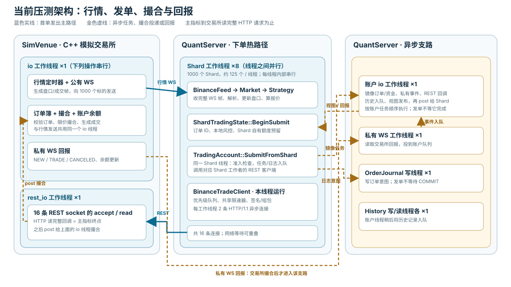

1. 目标与口径
目标是让 1000 个标的共享一个账户时，行情触发的订单尽快送达交易所，同时保留每个订单的风控、额度预留、请求限速和故障恢复语义。此前提出的局部目标是账户任务等待低于 10 µs、REST 待发等待低于 20 µs；改为 Shard 本地执行后，前一个“等待账户线程”的阶段已从发单关键路径消失，不能再用移动时间戳宣称达标。
2026-10-06 旧报告中的 34 µs 是旧 Paper 架构的“行情发送→压测 ACK”p50；进程内 Paper 撮合、无真实 REST 下单，不能与本文“行情发送→交易所读完整请求”或私有回报延迟直接比较。非 Release 二进制与 Release 的性能数字也不作为同一基线比较。
2. 当前执行架构：行情到交易所收单
本轮配置：1000 个标的、1 个账户、8 个 Shard 工作线程、16 条下单 REST 连接。一个 Shard 负责一个标的；每个工作线程约管 125 个 Shard。本章只跟踪行情触发的第一笔订单。主指标在模拟交易所读完整个下单 HTTP 请求时结束。


2.1 线程与连接
| 线程 | 连接 | 负责的事 |
|---|---|---|
| QuantServer：Shard 工作线程 ×8 | 每线程约 125 条行情 WS、2 条下单 REST | 收行情、策略、本地风控、写下单请求；8 个线程并行，同一线程的回调依次执行 |
| QuantServer：账户线程 ×1 | 无下单连接 | 从账户队列取任务，更新资金和订单总账 |
| QuantServer：私有 WS 线程 ×1 | 全账户共用 1 条私有 WS | 收订单和成交回报，交给账户线程 |
| QuantServer：数据库线程 | 订单日志写 ×1；历史写 ×1、读 ×1 | 处理 SQLite 队列 |
SimVenue：io 线程 ×1 | 1000 条行情 WS、1 条私有 WS | 发行情、维护订单簿和余额、撮合；这些业务操作串行 |
SimVenue：rest_io 线程 ×1 | 接收 16 条下单 REST | 读 HTTP 请求，读完整后交给 io 线程 |
下单和回报不是同一连接：下单请求及 HTTP 响应走 REST；NEW、TRADE 等订单回报走单独的私有 WS。QuantServer 没有专用 REST 工作线程，16 条 REST 连接分在 8 个 Shard 工作线程上。线程与连接分配
2.2 一笔单怎么发出去
SimVenue/io 改订单簿 → 发这个标的的行情 WS
Shard 所属工作线程 读 WS → 更新 Market → 策略决策 → 本地风控和额度预留
同一个 Shard 工作线程 调 SubmitFromShard：
① 检查账户准入
② 账户镜像任务入队
③ SubmitIntent 入订单日志队列
同一个 Shard 工作线程 REST 队列 → 限速检查 → 签名/组包 → 两条连接之一异步写
SimVenue/rest_io 读完整个 HTTP 请求 ★ 发单延迟终点没有“Shard → 账户线程 → REST 线程”的发单接力。从行情解析到 REST 写请求都由所属 Shard 工作线程推进。该线程同步等的是账户镜像任务和 SubmitIntent 入队成功；账户线程执行镜像、SQLite 提交、交易所撮合都不挡住这次写请求。若 REST 两条连接都忙或触发限速，请求在本工作线程的 REST 队列里异步等待，Shard 函数可以先返回。Shard 决策 · 下单入口 · REST 队列
2.3 数据分几份、各自保存什么
| 层级 | 主要数据及含义 | 谁修改、要不要锁 |
|---|---|---|
| Shard 级：1000 份 | market_：本标的盘口；strategy_：本标的策略状态；account_view_：账户规则和状态发给本 Shard 的副本 | 所属 Shard 工作线程修改，不用锁 |
| Shard 级：1000 份 | trading_.balances_：分给本 Shard 的资金；reserved_/holds_：已被本 Shard 订单占用的资金；orders_：本 Shard 的订单状态 | 所属 Shard 工作线程修改，不用锁。这些资金不是整个账户余额 |
| 工作线程级：8 份 | REST queues_：该线程约 125 个 Shard 的待发请求；rest_lanes_：该线程的 2 条下单连接 | 只在所属工作线程操作，队列不用互斥锁 |
| 账户级：1 份 | funds_：整个账户的资金总账；order_manager_：所有标的的订单总账；views_：要发给 Shard 的账户视图 | 账户线程处理；Shard 只投递任务，不直接改。账户处理用 state_mutex_ |
| 账户级共享入口：1 份 | 准入状态：账户能否下单；queue_：Shard、回报送来的账户任务；journal_sequence_：账户日志序号 | 8 个 Shard 线程会同时使用；分别用原子变量/admission_gate_mutex_、queue_mutex_、journal_mutex_ |
| 进程级：各 1 份 | RequestScheduler：全部 REST 连接共用的请求限速计数；OrderJournal/SqliteHistory：待写数据库队列 | 限速器和数据库队列各用自己的锁 |
| 模拟交易所级：1 份 | matcher：各标的买卖盘；wallet：模拟余额；orders：交易所收到的账户订单 | 只由 SimVenue/io 修改；rest_io 收到请求后投递给它 |
发单路径上的结论：本地盘口、策略、额度、预留和订单状态都在 Shard 内处理，没有锁。跨 Shard 的同步只出现在账户准入、账户任务入队、订单日志入队和全局限速；账户总账由账户线程异步更新。Shard 状态 · 账户状态 · 连接与限速
2.4 交易所收单和撮合
SimVenue/rest_io 的 http::async_read 读完整个下单请求时记录主指标终点，然后把请求投给 SimVenue/io。后者才验签、查余额、锁资金，并在这个标的的订单簿撮合。订单簿和模拟钱包都只由 SimVenue/io 修改；REST 接收线程不碰它们。模拟交易所
例如最优卖价是 100：限价 101 的买单能成交，成交价取簿上卖单的 100；限价 99 的买单不能成交，会挂在买盘。相同价位按进入订单簿的先后顺序成交。撮合代码
2.5 异步支路：账户、日志和回报
账户镜像任务和 SubmitIntent 在写 HTTP 请求之前入队。账户线程取出镜像任务、更新总账和视图；订单日志写线程取出 SubmitIntent、写 SQLite。这些执行可能与 REST 网络发送重叠，Shard 只等入队成功。历史记录由账户线程另行放进历史写队列。
交易所的 HTTP 响应沿原 REST 连接返回；NEW、TRADE 等回报沿单独的私有 WS 返回。私有 WS 线程将回报投到账户队列；账户线程先把回报写入订单日志，提交成功后才更新账户订单和资金，再把事件投回对应 Shard。交易所撮合、HTTP 响应和私有回报发生在本章主指标终点之后。账户回报
3. 完整链路
3.1 测试环境和数据
| 项目 | 本轮实际设置 |
|---|---|
| 机器与系统 | MacBook Air，Apple M2（4 个性能核、4 个能效核），24 GB 内存；macOS 26.1，arm64 |
| 工具链 | Bazelisk 使用仓库 .bazelversion 指定的 Bazel 9.2.0；本机 Apple clang 17.0.0 |
| 编译 | --config=release；.bazelrc 定义为 -c opt --copt=-g1。相关 C++ 编译命令含 -O2 -DNDEBUG -g1 -std=c++20 -fno-omit-frame-pointer；最低 macOS 版本 13.3。-g1 控制调试信息，优化来自 -O2 |
| CPU 调度 | 未主动请求高优先级 QoS：performance_qos_requested=false，9 个 Quant I/O 工作线程均未执行 QOS_CLASS_USER_INTERACTIVE 设置。压测入口没有 nice、taskpolicy 或绑核设置；外部 shell 的进程优先级未记录 |
| 实时 I/O | 未启用：realtime_io_requested=false。io_worker_qos_status=0 是未请求时的默认记录，不能当作提权成功 |
| 压测档位 | 本机 loopback、无 TLS；1000 个固定标的（STRESSSIM0001–STRESSSIM1000）、1 个账户、8 个 Shard 工作线程、16 条持久 REST 连接；运行 30 秒 |
- 行情：模拟交易所按固定顺序轮流更新 1000 个标的，每标的计划每 120 ms 做一次“深档挂撤”或“主动扫单”。30 秒产生 305,000 条计时行情（250,000 条深度、55,000 条公开成交），平均约 10,167 条/秒。Quant 实际处理 318,200 条公开 WS 帧；305,000 个压测 ACK 只确认计时行情已处理。生成代码 · 实测计数
- 交易：首轮 1000 个标的各下 1 笔买单、1 笔卖单，共 2000 笔；15 秒后 900 个标的刷新，再下 1800 笔。全程共 3800 次下单、3600 次撤单、400 次账户成交、7800 条私有订单回报。账户事件
- 延迟样本：只取首轮每个标的先开始的那笔订单，共 1000 笔；起点是触发行情发出，终点是交易所读完整个下单请求。本轮
valid=true，本地超时和队列过期均为 0。
3.2 链路耗时
各阶段的 p50/p99 分别计算，不能直接相加。
| 层级和时间边界 | p50 | p99 | 样本 |
|---|---|---|---|
| 1. 行情发送 → Shard 收完整 WS 帧 | 19 µs | 67 µs | 1000 |
| └ 行情发送 → Shard 首次 socket 读回调 | 19 µs | 63 µs | 1000 |
| └ 首次 socket 读回调 → 完整 WS 帧 | 1 µs | 9 µs | 1000 |
| 完整 WS 帧 → 行情解析完成 | 4 µs | 28 µs | 1000 |
| 2. 解析完成 → 首单本地准入完成 | 3 µs | 28 µs | 1000 |
| └ 解析完成 → 首单开始处理 | 2 µs | 17 µs | 1000 |
| └ 首单开始 → 订单 ID 完成 | 1 µs | 13 µs | 1000 |
| └ ID 完成 → 本地风控与资金预留完成 | 1 µs | 13 µs | 1000 |
本地准入完成 → REST 客户端记录 enqueued_ns | 2 µs | 35 µs | 1000 |
| 3. REST 入队 → 开始写 HTTP 请求 | 5 µs | 52 µs | 1000 |
└ enqueued_ns → 连接派发 | 1 µs | 15 µs | 1000 |
| └ 连接派发 → 开始写 HTTP 请求 | 4 µs | 44 µs | 1000 |
| 4. 开始写 → 交易所读完整 HTTP 请求 | 30 µs | 106 µs | 1000 |
└ 开始写 → 调用 async_write_some | 1 µs | 9 µs | 1000 |
└ async_write_some 调用 → 返回 | 5 µs | 30 µs | 1000 |
| └ 写调用返回 → 交易所首次 socket 读回调 | 19 µs | 90 µs | 993 |
| └ 交易所首次 socket 读回调 → HTTP 请求完整 | 1 µs | 15 µs | 1000 |
| 行情发送 → 交易所读完整下单请求 | 74 µs | 212 µs | 1000 |
总耗时按订单相加，再取分位数。 每笔订单的六段依次是“行情发出→完整帧、完整帧→解析、解析→本地准入、准入→REST 入队、REST 入队→开始写、开始写→交易所读完”。按总耗时排序第 500 笔为 18+4+3+3+4+42=74 µs，第 990 笔为 43+14+45+5+40+65=212 µs。表中各段的 p50/p99 分别排序，通常来自不同订单，所以横向相加不会得到 74/212 µs。
第 2 段从 parsed_ns 算到 BeginSubmit 完成后的 started_ns；第 3 段从 enqueued_ns 算到 write_start_ns，均按 1000 笔首单逐笔计算。“写调用返回→交易所首次 socket 读回调”只有 993 笔有序样本；其余 7 笔，交易所读回调先于客户端写调用返回。交易所读完整请求是主指标终点，不包含撮合、REST 响应、私有 WS 回报或本地入账。
4. 问题、方案和实测结果
以下旧轮次与第 3 章的最新轮次都使用本机 Release、1000 标的、30 秒、16 条 REST 连接；代码版本、探针和首单筛选不同，数值用于定位瓶颈，不能当成严格 A/B 收益。
4.1 一个账户线程挡住所有 Shard 下单
问题：旧链路是 Shard 策略 → TrySubmit 入账户队列 → 唯一账户线程 Drain/ProcessSubmit → REST。账户线程逐笔做风控、资金预留、订单状态、日志/历史和视图工作；来自不同 Shard 的订单也必须排队。早期轮次中，策略请求到该线程开始处理就等了 80 µs / 1.282 ms（p50/p99），这段时间还没有做风控；行情发出到交易所读完整请求为 180 µs / 2.862 ms。早期轮次
方案：创建 Shard 时由 ResolveShardAllocations 分配各自的资金和风险额度；所属 Shard 线程在 ShardTradingState::BeginSubmit 内做风控、订单跟踪和资金预留。之后 SubmitFromShard 检查账户准入，把总账镜像任务和订单意图日志入队，再调用 REST 客户端。账户线程仍更新总账，但下单不等它执行镜像任务。各 Shard 的额度独立，闲置额度不会自动借给其他 Shard。
结果：“等待账户线程开始处理”不再位于发单路径，不能把它记作 0 µs。最新首单的本地风控与预留为 1 / 13 µs，本地准入完成到 REST 客户端记录 enqueued_ns 为 2 / 35 µs（p50/p99）；后者仍包含准入门禁、两个入队动作等，且时间戳位于 REST 实际队列插入之前。只完成 Shard 本地准入、REST 尚未改造的中间轮次，全链路为 123 / 269 µs。中间轮次；额度拆分和本地准入由 shard_allocation_test 覆盖。
4.2 唯一 REST 线程让请求再次排队
问题：完成 Shard 本地准入后，请求还要投给一个专用 REST 线程。它轮流处理各 Shard 的入队、限速、签名、组包和连接写入；16 条连接可以并行等网络，但这一线程上的准备与派发回调仍依次运行。中间轮次的 REST enqueued_ns→连接派发为 33 / 133 µs，行情发出→交易所读完整请求为 123 / 269 µs（p50/p99）。前一段包含投递、等待唤醒、队列和连接调度，不能全部算作线程等待。中间轮次
方案：Runtime 将 16 条 REST 连接分到 8 个 Shard 工作线程，每线程 2 条。BinanceTradeClient::Enqueue 发现当前已在所属线程时直接调用 QueueOnRest；只有跨线程调用才走 asio::dispatch。请求进入该线程的有界队列，再由本线程检查全局限速、签名组包并异步写连接，不再投给专用 REST 线程。
结果：最新首单的 enqueued_ns→连接派发为 1 / 15 µs，行情发出→交易所读完整请求为 74 / 212 µs（p50/p99）。同架构的另外两轮分别测得派发 1 / 12 µs、全链路 90 / 314 µs，以及派发 1 / 15 µs、全链路 89 / 479 µs；后一轮带客户端、交易所和 kevent 探针。可确认派发耗时降到了微秒级，但全链路 p99 有轮次波动，不能把两次全链路分位数相减当作精确收益。无新增探针轮次 · 探针轮次
4.3 网络写到交易所读取：已定位，未做优化
问题：最新首单“开始写→模拟交易所读完整请求”仍为 30 / 106 µs（p50/p99），是第 3 章中较长的一段。Binance 参数、签名和 HTTP 组包在 HttpClient::Send 记录 write_start_ns 之前已经完成，不属于这段时间。
方案：在客户端首次 async_write_some 调用和返回、SimVenue 首次 socket 读回调和 HTTP 请求读完整时分别记录时间戳，按同一订单对齐；本轮只拆分耗时，没有改网络收发逻辑。
结果：写调用到返回为 5 / 30 µs；写调用返回到交易所首次读回调为 19 / 90 µs（993 笔有序样本）；交易所首次读回调到 HTTP 请求完整为 1 / 15 µs。另外 7 笔的交易所读回调早于客户端写调用返回，不能硬算这一段。1000 笔均只触发一次交易所底层 socket 读取。最新轮次未启用 kevent 探针，现有数据不能再把 19 / 90 µs 分成内核传递与交易所线程调度，也没有可报告的优化收益。
5. 验收与复现
5.1 实际测试环境
两组正确性测试均于 2026-10-12 在同一台 MacBook Air（Apple M2、24 GB、macOS 26.1、arm64）上执行；Bazel 9.2.0、Apple clang 17.0.0。下表是四类通道，不是总共四条 socket。
| 通道 | Quant 用它做什么 | 本机模拟交易所 | Binance Spot Demo |
|---|---|---|---|
| 公开 REST | GET /api/v3/depth 取盘口快照；启动和重同步时用它对齐 WS 增量 | 127.0.0.1 动态端口，无 TLS | demo-api.binance.com:443，TLS |
| 公开 WS | 持续接收 depthUpdate 和公开 trade；更新盘口并触发策略 | 127.0.0.1 动态端口，1000 个标的各一条 WS，无 TLS | demo-stream.binance.com:443，TLS |
| 交易 REST | 签名下单、撤单，并查询订单、成交和账户余额；HTTP 响应沿请求连接返回 | 127.0.0.1 动态端口，16 条持久连接，无 TLS | demo-api.binance.com:443，TLS |
| 私有 WS | 签名订阅账户用户流；接收 NEW、成交、撤单及余额推送，交给账户处理 | 127.0.0.1 动态端口，账户共用 1 条 WS，无 TLS | demo-ws-api.binance.com:443，TLS |
本机另用 UDP ACK 确认计时行情已处理；它不是交易所订单回报。
| 项目 | 本机模拟交易所正确性轮次 | Binance Spot Demo 正确性轮次 |
|---|---|---|
| 进程与模式 | trade_chain_bench 内运行 C++ SimVenue，启动独立的 C++ hquant_server；pressure_sim | 本机运行 C++ hquant_server，连接远端 Demo；online_sim |
| 规模 | 1 个共享账户、1000 个固定标的（STRESSSIM0001–STRESSSIM1000）、8 个 Shard 工作线程、16 条交易 REST 连接、30 秒 | 1 个账户、1 个 BTCUSDT Shard；每个读写状态目录最多 1 笔限价单 |
| 资金与订单 | 每标的初始 1000 单位及 10 亿 USD，模拟手续费率 0.001 | 入场余额 BTC 0.00019980、USDT 4983.38227500、USDC 5000.00000000；每单 0.0001 BTC，策略额度 20 USDT |
| 下单限制 | 未配置请求权重和 10 秒挂单数上限 | 只读 max_submissions_per_run: 0；订单验收在新状态目录临时设为 1；每分钟 200 权重、每 10 秒 1 次挂单 |
| 盘口与策略 | 900 个普通标的：报价量 1、价差 0.001、15 秒刷新；100 个成交标的：报价量 2、价差 0.00005、60 秒刷新 | 深度快照 100 档、最多 3 次；未成交单价差 0.001、15 秒刷新；成交单买价差 0、120 秒刷新 |
| 编译与调度 | --config=release（-O2 -DNDEBUG -g1）；探针 记录 QoS 与实时 I/O 均已请求，9 个 Quant I/O 线程设置返回值均为 0、实时 I/O 验证均为 true | 未记录二进制编译参数；这里只验收协议与账本，不报告 Demo 延迟 |
| 结果位置 | /private/tmp/hquant-correctness-20261012-a1 | 第 5.3 节逐项链接只读、撤单、成交、对账和重启结果；凭据留在权限 0600 的本地忽略文件中 |
第 3 章的 74 / 212 µs 来自另一轮未请求 QoS 和实时 I/O 的本机性能测试。
5.2 本机模拟交易所：验收条件与结果
模拟交易所按固定顺序对 1000 个标的重复深档挂撤和主动扫单。30 秒计划产生 250,000 条计时深度帧和 55,000 条计时公开成交帧；策略首轮对 1000 个标的各报买卖两笔，15 秒后 900 个普通标的刷新报价。压测结束先暂停新单并清场，等账户和私有回报结清后再停止服务。表中前四项是 valid=true 的自动验收条件；最后一项是停机后追加的数据库检查。
| 验收项 | 必须满足 | 本轮实测证据 | 判定 |
|---|---|---|---|
| 行情完整 | 每个 bench_seq 有一条已处理 ACK；发送、完整帧、解析、处理、ACK 的时间戳顺序正确；无坏帧 | 305,000 条计时行情对应 305,000 个 ACK，坏帧与 ACK 错误均为 0；加上启动、订单和补单引起的帧，公开 WS 总量 318,200 | 通过 |
| 请求送达 | 首轮 2000 笔下单、刷新 1800 笔下单及 3600 笔撤单按订单 ID 对上客户端与交易所接收记录；无遗留请求 | 下单 3800、撤单 3600；客户端与交易所各记录 7400 条 REST 请求，逐笔关联后没有未匹配请求；首轮报价对应 1000 组买卖单 | 通过 |
| 撮合与私有回报 | 每单仅提交一次、收到一次 NEW 和一次终态；成交 ID 唯一、累计成交量不超原单、剩余量等于原单减已成交量；交易所与本地成交逐 ID 对应 | 400 次账户成交；私有回报为 3800 NEW、3600 CANCELED、200 PARTIALLY_FILLED、200 FILLED，共 7800 条；无遗留回报或重复成交 | 通过 |
| 账户结清 | 每项资产的 total/free/locked 与模拟交易所相同；活动单、未知单、待写日志、本地超时、队列过期均为 0 | 1001 项资产逐项对账；open_orders=0、unknown_orders=0、pending_journal=0，超时与队列过期均为 0 | 通过 |
| 落盘可读 | 历史与可靠日志序号连续、无历史缺口，两份 SQLite 完整 | 停机后另行检查：history.sqlite 有 42,003 条连续账户事件、缺口 0；order_journal.sqlite 有 41,605 条连续记录；两库 integrity_check=ok | 通过 |
撮合单测覆盖撤单幂等、聚合价位及标的隔离；sim_venue_market_test 通过真实 WS 和 REST 快照核对公开盘口；shard_allocation_test 覆盖额度、预留、部分成交及释放；trade_chain_smoke、trade_end_to_end、demo_config_test 均通过。原始 行情追踪、订单事件、客户端 REST、交易所 REST 和两份 SQLite 均在该状态目录。SQLite 完整性是停机后的追加核对；valid=true 由前四项自动断言产生。
复现本机全量轮次时使用新的空状态目录：
bazelisk --batch build --config=release \
//hquant/src:hquant_server //hquant/bench:trade_chain_bench
bazelisk --batch test --config=release \
//hquant/bench/venue:matching_engine_test \
//hquant/bench/venue:sim_venue_market_test \
//hquant/test:shard_allocation_test \
//hquant/test:trade_chain_smoke \
//hquant/test:trade_end_to_end \
//hquant/test:demo_config_test
bazel-bin/hquant/bench/trade_chain_bench \
--symbols 1000 --seconds 30 --rest-connections 16 \
--server bazel-bin/hquant/src/hquant_server \
--state-dir /tmp/hquant-trade-perf-new-run5.3 Binance Spot Demo：正常交易链路验收
只读、撤单和成交各用新状态目录；成交后用原目录、原余额基线和零下单配置重启。下表按实际发生的链路验收，五项结果均为 valid=true。
| 环节 | PASS 条件 | 实测关键证据 | 结果 |
|---|---|---|---|
| 只读入场 | 规则和全账户余额匹配；公开行情与私有 WS 可用；零下单、零未结订单 | 盘口 live，收到 4 条深度、33 条公开成交；活动／未知单 0，下单 0；日志 1712 条连续、两库完整。结果 | PASS |
| 未成交单清场撤单 | 单笔订单先收 NEW，再收 CANCELED；零成交、无未结订单、锁定资金释放 | 订单 72624963969：提交 1、撤单 1、成交 0；交易所查单为 CANCELED、myTrades 为空，余额回到入场值；两库各 1726 条连续记录。独立核对 | PASS |
| 下单后成交 | 单笔订单收到 NEW → TRADE/FILLED；成交只入账一次，数量、价格、手续费正确 | 订单 72626673505、成交 321511253：买入 0.00010000 BTC × 82739.22 USDT，手续费 0.00000010 BTC；成交 1、撤单 0，两库各 1725 条连续记录。结果 | PASS |
| 独立交易所对账 | 停机后用交易所查单、查成交、查未结订单、查全账户余额，与本地 SQLite 逐项一致 | 4 次签名 GET：订单 FILLED、唯一成交 ID 与手续费匹配，未结订单 0；BTC 0.00029970、USDT 4975.10835300、USDC 5000.00000000，锁定额均为 0，其他资产也逐项相等。独立核对 | PASS |
| 同目录重启 | 重放日志后余额和订单仍正确；不得再发单或重复入账 | 私有 WS 与盘口恢复；新发单 0，原订单意图和成交各仅 1 条，活动／未知单 0；日志 5149 条连续，历史三次运行 1725／1712／1712 条、无缺口。重启核对 | PASS |
未计入该轮 PASS：首次 cancel_all 控制请求因验收脚本漏传必填字段被拒；表中撤单由服务停机清场完成。该命令已在下方 2026-10-13 单笔采样中复测通过。一次签名 GET 返回 Binance -1021，间隔后四项独立查询成功，未增发订单。重启后 manually paused 是清场保留的暂停状态，账本对齐。丢 HTTP 响应、私有 WS 断线、限流和第三资产手续费等异常路径尚未在 Demo 复现，见Demo 验证记录。
5.4 Demo 单笔客户端延迟（2026-10-13）
新状态目录、Release 二进制、BTCUSDT 单笔虚拟资金订单；结果为 CANCELED、成交 0，独立对账 valid=true。以下交易数字均为单笔观测值，不能当作 p50/p99；时间戳来自客户端同机 CLOCK_MONOTONIC。完整逐段数据
| 轨道 | 客户端可见边界 | 实测 |
|---|---|---|
| 公开行情 | WS 读取返回→解析完成；每 10 帧采 1 帧，共 12 个样本 | p50 0.958 µs、p99 5.250 µs |
| 公开行情 | 解析完成→行情事件处理完成（深度更新或公开成交）；同上 12 个样本 | p50 0.500 µs、p99 1.083 µs |
| 策略与本地准入 | 本次下单的 Strategy::Decide；生成订单 ID；本地风控及预留 | 1.375 µs；12 µs；6 µs |
| 发单准备 | 本地准入→REST 入队；入队→连接派发；派发→开始写 | 11 µs；7 µs；46 µs |
| REST 写请求 | 开始写→请求写完；其中首个 async_write_some 调用→返回 | 171 µs；51 µs |
| REST 等响应 | 请求写完→收到完整 HTTP 响应 | 211.827 ms |
| REST 累计 | REST 入队→完整 HTTP 响应 | 212.051 ms |
| 下单累计 | 策略生成订单请求→完整 HTTP 响应 | 212.080 ms |
私有 NEW | REST 开始写→私有 WS 帧完整；帧完整→解析完成；解析完成→WS 回调结束；帧完整→本地账户应用记录 | 211.906 ms；10 µs；32 µs；692 µs |
| 回报累计 | 策略生成订单请求→NEW 已在本地账户记录 | 212.680 ms |
| 撤单 REST | 入队→派发；派发→开始写；开始写→写完（首个写调用→返回）；写完→完整 HTTP 响应 | 4 µs；31 µs；54 µs（其中 28 µs）；213.535 ms |
私有 CANCELED | 撤单 REST 开始写→私有 WS 帧完整；帧完整→解析完成；解析完成→WS 回调结束；帧完整→本地账户应用记录 | 213.547 ms；12 µs；13 µs；828 µs |
SubmitFromShard 从本地准入到函数返回为 157 µs，其中与 REST 派发／写入重叠，不能加到上表的累计值。Binance 不提供本轮服务端读完整请求的时间戳；“写完→HTTP 响应”包含网络往返和交易所处理，不能拆成纯网络或撮合耗时。Demo 行情没有 bench_seq，无法把某一帧与本单逐帧关联；撤单在观察约 2 秒后才触发，不能用“下单→CANCELED”衡量发单速度。本轮没有新增 FILLED 延迟样本。
6. 本轮代码与数据索引
| 内容 | 位置 |
|---|---|
| Shard 额度配置与解析 | config.h、config.cc |
| Shard 本地订单/资金准入 | trading_state.cc、shard.cc |
| Shard 工作线程和 REST 连接分配 | runtime.cc |
| 账户镜像、日志和发单入口 | trading_account.cc、trading_account_journal.cc |
| REST 队列、限速、签名、网络写探针 | trade_client.cc、net.cc |
| 模拟交易所读探针和完整请求边界 | sim_venue.cc、trade_chain_bench.cc |
| 旧架构和早期性能报告 | V2 设计、首轮优化计划、旧 Paper 报告 |